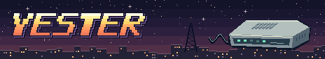

TOKEN ALLEY / OPEN ALL NIGHT
Quarter Moon Arcade
Our cabinet is open. Pond Post is on the floor tonight.

YESTER is a pocket browser for handmade sites. Tonight we start at Quarter Moon Arcade. Enter the game room, or hit Next to see whose homepage turns up.
Android download APK coming later.
Our cabinet is open. Pond Post is on the floor tonight.
Pick a skin. It snaps onto the browser above.